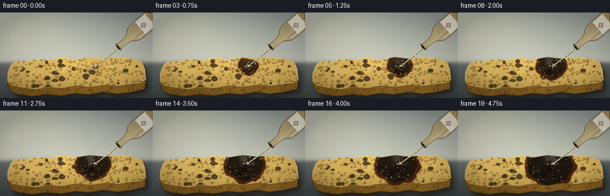
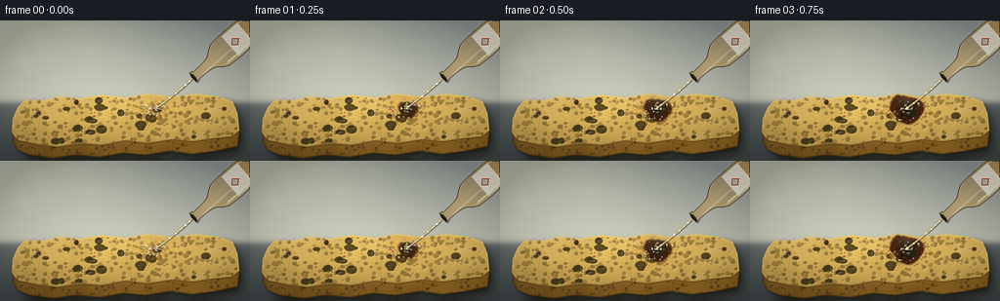
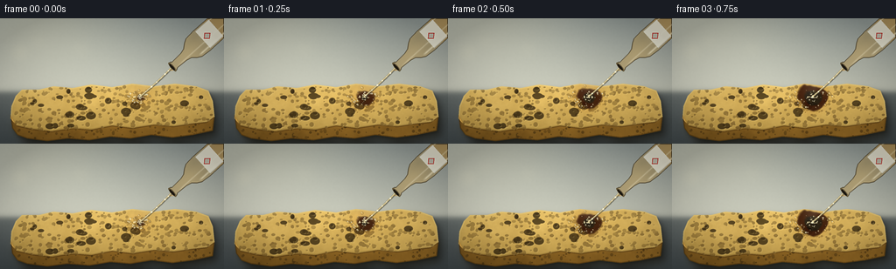

CODING AGENTS AS PIXEL WORLD MODELS
traex/DeepSeek-V4.1-Flash · phygen_155
点击播放 · 原生 RGB 像素
逐轮保存的候选
回放视频、检查图与代码变化。
每份候选均可单独播放。实际图片检查记录在下方工具轨迹中。
候选 01播放与检查图
点击播放 · 原生 RGB 像素


展开代码变化
--- 上一保存版本
+++ 本次保存版本
@@ -0,0 +1,645 @@
+from pathlib import Path
+import math
+
+import numpy as np
+from PIL import Image, ImageDraw, ImageFilter
+from scipy.ndimage import binary_erosion, gaussian_filter
+
+import artifact_io
+
+
+W, H = 256, 144
+S = 4
+RW, RH = W * S, H * S
+N = 20
+
+CASE_DIR = Path(__file__).resolve().parent
+YY, XX = np.mgrid[0:RH, 0:RW].astype(np.float32)
+X = XX / S
+Y = YY / S
+
+
+def smoothstep(a, b, value):
+ q = np.clip((value - a) / (b - a), 0.0, 1.0)
+ return q * q * (3.0 - 2.0 * q)
+
+
+def make_noise(seed, sigma, shape=(RH, RW)):
+ rng = np.random.default_rng(seed)
+ field = gaussian_filter(rng.random(shape, dtype=np.float32), sigma * S, mode="reflect")
+ lo, hi = float(field.min()), float(field.max())
+ return (field - lo) / max(hi - lo, 1e-6)
+
+
+def polygon_mask(points, blur=0.0):
+ image = Image.new("L", (RW, RH), 0)
+ ImageDraw.Draw(image).polygon(
+ [(int(round(px * S)), int(round(py * S))) for px, py in points],
+ fill=255,
+ )
+ mask = np.asarray(image, dtype=np.float32) / 255.0
+ if blur:
+ mask = gaussian_filter(mask, blur * S)
+ return np.clip(mask, 0.0, 1.0)
+
+
+def ellipse_mask(cx, cy, rx, ry, blur=0.0):
+ image = Image.new("L", (RW, RH), 0)
+ ImageDraw.Draw(image).ellipse(
+ [
+ int((cx - rx) * S),
+ int((cy - ry) * S),
+ int((cx + rx) * S),
+ int((cy + ry) * S),
+ ],
+ fill=255,
+ )
+ mask = np.asarray(image, dtype=np.float32) / 255.0
+ if blur:
+ mask = gaussian_filter(mask, blur * S)
+ return np.clip(mask, 0.0, 1.0)
+
+
+def blend(img, color, alpha):
+ color_array = np.asarray(color, dtype=np.float32)
+ a = np.clip(alpha, 0.0, 1.0)[..., None]
+ return img * (1.0 - a) + color_array[None, None, :] * a
+
+
+def blend_rgb(img, color, alpha):
+ a = np.clip(alpha, 0.0, 1.0)[..., None]
+ return img * (1.0 - a) + color * a
+
+
+def shifted(mask, dx, dy):
+ ix, iy = int(round(dx * S)), int(round(dy * S))
+ result = np.zeros_like(mask)
+ src_y0, src_y1 = max(0, -iy), min(RH, RH - iy)
+ src_x0, src_x1 = max(0, -ix), min(RW, RW - ix)
+ result[src_y0 + iy : src_y1 + iy, src_x0 + ix : src_x1 + ix] = mask[
+ src_y0:src_y1, src_x0:src_x1
+ ]
+ return result
+
+
+def background():
+ horizon = 1.0 / (1.0 + np.exp(-(Y - 84.0) / 1.8))
+ wall_t = np.clip(Y / 88.0, 0.0, 1.0)[..., None]
+ wall = np.array([0.57, 0.61, 0.61], np.float32) * (1.0 - wall_t) + np.array(
+ [0.78, 0.79, 0.74], np.float32
+ ) * wall_t
+ bench_t = np.clip((Y - 80.0) / 64.0, 0.0, 1.0)[..., None]
+ bench = np.array([0.40, 0.43, 0.43], np.float32) * (1.0 - bench_t) + np.array(
+ [0.25, 0.28, 0.29], np.float32
+ ) * bench_t
+ img = wall * (1.0 - horizon[..., None]) + bench * horizon[..., None]
+
+ warm = np.exp(
+ -((X - 40.0) ** 2 / (115.0**2) + (Y + 12.0) ** 2 / (80.0**2))
+ )
+ cool = np.exp(
+ -((X - 226.0) ** 2 / (105.0**2) + (Y - 48.0) ** 2 / (95.0**2))
+ )
+ img += warm[..., None] * np.array([0.15, 0.12, 0.06], np.float32)
+ img -= cool[..., None] * np.array([0.02, 0.025, 0.035], np.float32)
+
+ grain = make_noise(12, 0.65) - 0.5
+ img += grain[..., None] * 0.012
+
+ bokeh = Image.new("L", (RW, RH), 0)
+ draw = ImageDraw.Draw(bokeh)
+ for cx, cy, radius, level in [
+ (23, 39, 8, 38),
+ (43, 27, 5, 28),
+ (15, 65, 4, 30),
+ (92, 35, 7, 20),
+ (222, 42, 11, 22),
+ ]:
+ draw.ellipse(
+ [
+ int((cx - radius) * S),
+ int((cy - radius) * S),
+ int((cx + radius) * S),
+ int((cy + radius) * S),
+ ],
+ fill=level,
+ )
+ bokeh_array = gaussian_filter(np.asarray(bokeh, np.float32) / 255.0, 5.0 * S)
+ img += bokeh_array[..., None] * np.array([0.22, 0.18, 0.10], np.float32)
+ return np.clip(img, 0.0, 1.0)
+
+
+TOP_POLY = [
+ (18, 89), (25, 82), (44, 82), (61, 78), (83, 80), (104, 76),
+ (128, 79), (151, 75), (176, 78), (200, 75), (224, 78), (238, 83),
+ (243, 95), (245, 113), (236, 119), (218, 121), (198, 124), (176, 122),
+ (151, 126), (128, 123), (104, 128), (82, 126), (59, 130), (36, 127),
+ (19, 123), (12, 115), (13, 101),
+]
+
+SIDE_POLY = [
+ (12, 111), (19, 123), (36, 127), (59, 130), (82, 126), (104, 128),
+ (128, 123), (151, 126), (176, 122), (198, 124), (218, 121), (236, 119),
+ (245, 113), (243, 129), (220, 134), (197, 137), (173, 134), (149, 138),
+ (126, 136), (102, 140), (77, 138), (54, 141), (31, 138), (20, 134),
+ (14, 126),
+]
+
+
+def render_sponge(bg):
+ top = polygon_mask(TOP_POLY, 0.28)
+ side = polygon_mask(SIDE_POLY, 0.28)
+ whole = np.clip(top + side, 0.0, 1.0)
+
+ shadow = shifted(whole, 5.0, 6.5)
+ shadow = gaussian_filter(shadow, 4.2 * S)
+ bg *= 1.0 - 0.48 * shadow[..., None]
+
+ contact = gaussian_filter(shifted(whole, 1.2, 2.0), 1.3 * S)
+ bg *= 1.0 - 0.25 * contact[..., None]
+
+ coarse = make_noise(21, 12.0)
+ medium = make_noise(22, 3.2)
+ fine = make_noise(23, 0.85)
+ x_norm = np.clip((X - 14.0) / 232.0, 0.0, 1.0)
+ y_norm = np.clip((Y - 73.0) / 67.0, 0.0, 1.0)
+
+ q = np.clip(
+ 0.47 + 0.22 * coarse + 0.13 * medium + 0.07 * fine
+ + 0.13 * (1.0 - y_norm) + 0.05 * (1.0 - x_norm),
+ 0.0,
+ 1.0,
+ )
+ shadow_color = np.array([0.38, 0.255, 0.065], np.float32)
+ lit_color = np.array([0.96, 0.80, 0.42], np.float32)
+ top_rgb = shadow_color[None, None, :] * (1.0 - q[..., None]) + lit_color[
+ None, None, :
+ ] * q[..., None]
+ top_rgb *= (0.92 + 0.12 * (1.0 - y_norm))[..., None]
+
+ side_q = np.clip(
+ 0.30 + 0.22 * coarse + 0.15 * medium + 0.08 * fine
+ + 0.09 * (1.0 - y_norm),
+ 0.0,
+ 1.0,
+ )
+ side_rgb = np.array([0.26, 0.17, 0.045], np.float32)[None, None, :] * (
+ 1.0 - side_q[..., None]
+ ) + np.array([0.72, 0.52, 0.20], np.float32)[None, None, :] * side_q[..., None]
+
+ img = bg * (1.0 - whole[..., None]) + top_rgb * top[..., None] + side_rgb * side[
+ ..., None
+ ]
+
+ top_core = top > 0.5
+ top_edge = np.clip(top - binary_erosion(top_core, iterations=max(1, int(1.3 * S))), 0, 1)
+ top_edge = gaussian_filter(top_edge, 0.35 * S)
+ upper_edge = top_edge * (1.0 - smoothstep(112.0, 128.0, Y))
+ lower_edge = top_edge * smoothstep(108.0, 132.0, Y)
+ img = blend(img, (1.00, 0.91, 0.60), upper_edge * 0.34)
+ img = blend(img, (0.28, 0.18, 0.045), lower_edge * 0.34)
+
+ side_core = side > 0.5
+ side_edge = np.clip(side - binary_erosion(side_core, iterations=max(1, int(1.0 * S))), 0, 1)
+ img = blend(img, (0.20, 0.12, 0.025), gaussian_filter(side_edge, 0.25 * S) * 0.48)
+
+ rng = np.random.default_rng(331)
+ pore_image = Image.new("L", (RW, RH), 0)
+ large_image = Image.new("L", (RW, RH), 0)
+ pore_draw = ImageDraw.Draw(pore_image)
+ large_draw = ImageDraw.Draw(large_image)
+ for _ in range(360):
+ px = rng.uniform(17.0, 242.0)
+ py = rng.uniform(78.0, 128.0)
+ if top[min(RH - 1, int(py * S)), min(RW - 1, int(px * S))] < 0.5:
+ continue
+ radius = rng.uniform(0.55, 2.35)
+ rx = radius * rng.uniform(0.75, 1.45)
+ ry = radius * rng.uniform(0.65, 1.20)
+ box = [
+ int((px - rx) * S), int((py - ry) * S),
+ int((px + rx) * S), int((py + ry) * S),
+ ]
+ pore_draw.ellipse(box, fill=int(rng.uniform(140, 240)))
+ for _ in range(28):
+ px = rng.uniform(24.0, 234.0)
+ py = rng.uniform(82.0, 124.0)
+ if top[min(RH - 1, int(py * S)), min(RW - 1, int(px * S))] < 0.5:
+ continue
+ radius = rng.uniform(2.3, 4.7)
+ rx = radius * rng.uniform(0.85, 1.45)
+ ry = radius * rng.uniform(0.55, 1.05)
+ large_draw.ellipse(
+ [
+ int((px - rx) * S), int((py - ry) * S),
+ int((px + rx) * S), int((py + ry) * S),
+ ],
+ fill=255,
+ )
+
+ pores = gaussian_filter(np.asarray(pore_image, np.float32) / 255.0, 0.26 * S) * top
+ large = gaussian_filter(np.asarray(large_image, np.float32) / 255.0, 0.30 * S) * top
+ img = blend(img, (0.20, 0.125, 0.035), pores * 0.48)
+ img = blend(img, (0.095, 0.060, 0.018), large * 0.72)
+ pore_rim = np.clip(shifted(pores + large, 0.65, 0.75) - (pores + large), 0, 1)
+ img = blend(img, (1.0, 0.88, 0.55), pore_rim * 0.26)
+
+ side_pores = Image.new("L", (RW, RH), 0)
+ side_draw = ImageDraw.Draw(side_pores)
+ for _ in range(100):
+ px = rng.uniform(16.0, 241.0)
+ py = rng.uniform(120.0, 138.0)
+ if side[min(RH - 1, int(py * S)), min(RW - 1, int(px * S))] < 0.5:
+ continue
+ radius = rng.uniform(0.45, 1.8)
+ side_draw.ellipse(
+ [
+ int((px - radius) * S), int((py - radius) * S),
+ int((px + radius) * S), int((py + radius) * S),
+ ],
+ fill=int(rng.uniform(100, 210)),
+ )
+ side_pore_mask = gaussian_filter(
+ np.asarray(side_pores, np.float32) / 255.0, 0.22 * S
+ ) * side
+ img = blend(img, (0.12, 0.075, 0.018), side_pore_mask * 0.58)
+
+ reflection = gaussian_filter((top + side) * 0.4, 4.0 * S)
+ img += shifted(reflection, 1.5, 8.0)[..., None] * np.array(
+ [0.10, 0.075, 0.02], np.float32
+ )
+ return np.clip(img, 0.0, 1.0), top, side
+
+
+def reaction(img, top, frame):
+ t = frame / (N - 1)
+ cx = 159.5 + 0.9 * math.sin(2.0 * math.pi * t)
+ cy = 90.7 + 0.35 * math.sin(2.0 * math.pi * t + 0.6)
+ radius = 5.7 + 36.5 * (t**0.72)
+
+ coarse = make_noise(70, 5.4)
+ fine = make_noise(71, 1.15)
+ dx = X - (cx - 3.8 * t)
+ dy = (Y - cy) * 1.08
+ distance = np.sqrt(dx * dx + dy * dy)
+ warp = (coarse - 0.5) * 9.0 + (fine - 0.5) * 2.4
+ warp += 1.7 * np.sin(0.17 * X + 0.11 * Y + 0.45 * t)
+ front = np.clip((radius + warp - distance) / 1.55 + 0.5, 0.0, 1.0)
+ front = gaussian_filter(front, 0.55 * S) * top
+ inner_radius = max(0.0, radius - 5.2)
+ inner = np.clip((inner_radius + warp * 0.80 - distance) / 1.35 + 0.5, 0.0, 1.0)
+ inner = gaussian_filter(inner, 0.40 * S) * top
+ rim = np.clip(front - inner, 0.0, 1.0)
+
+ wet_radius = radius * 0.70 + 3.0
+ wet = np.exp(-((distance - wet_radius) / 7.0) ** 2) * top
+ wet *= 0.25 + 0.30 * t
+ img = blend(img, (0.76, 0.39, 0.055), wet * 0.42)
+ gloss = np.exp(
+ -((X - (cx - 8.0)) / 11.0) ** 2 - ((Y - (cy - 5.0)) / 4.5) ** 2
+ ) * (0.20 + 0.18 * t)
+ img = blend(img, (1.0, 0.86, 0.50), gloss * top * 0.26)
+
+ char_texture = np.clip(0.50 * coarse + 0.35 * fine + 0.15, 0.0, 1.0)
+ char_rgb = np.empty_like(img)
+ char_rgb[..., 0] = 0.035 + 0.055 * char_texture
+ char_rgb[..., 1] = 0.027 + 0.040 * char_texture
+ char_rgb[..., 2] = 0.022 + 0.030 * char_texture
+ img = blend_rgb(img, char_rgb, front * (0.86 + 0.08 * t))
+ img = blend(img, (0.43, 0.145, 0.025), rim * 0.38)
+ img = blend(img, (0.88, 0.36, 0.045), rim * smoothstep(0.15, 1.0, t) * 0.09)
+
+ streak_noise = make_noise(72, 1.4)
+ streak = np.clip((streak_noise - 0.70) * 3.2, 0, 1) * inner
+ img = blend(img, (0.31, 0.16, 0.055), streak * 0.18)
+
+ return img, cx, cy, radius, front, inner
+
+
+def bubbles(img, top, frame, cx, cy, radius):
+ t = frame / (N - 1)
+ rim_image = Image.new("L", (RW, RH), 0)
+ fill_image = Image.new("L", (RW, RH), 0)
+ glint_image = Image.new("L", (RW, RH), 0)
+ rim_draw = ImageDraw.Draw(rim_image)
+ fill_draw = ImageDraw.Draw(fill_image)
+ glint_draw = ImageDraw.Draw(glint_image)
+
+ for index in range(46):
+ rng = np.random.default_rng(900 + index)
+ angle = rng.uniform(0.0, 2.0 * math.pi)
+ spread = math.sqrt(rng.uniform(0.0, 1.0)) * (radius + 8.0)
+ wobble = 1.7 * math.sin(frame * 0.55 + index * 1.9)
+ px = cx + math.cos(angle) * spread + wobble
+ py = cy + math.sin(angle) * spread * 0.64 + 0.8 * math.cos(frame * 0.42 + index)
+ if not (17 < px < 242 and 78 < py < 128):
+ continue
+ if top[min(RH - 1, int(py * S)), min(RW - 1, int(px * S))] < 0.5:
+ continue
+ phase = (index * 0.371 + t * 1.9) % 1.0
+ if phase < 0.13:
+ continue
+ rr = rng.uniform(0.55, 2.75) * (0.82 + 0.20 * math.sin(frame + index))
+ width = max(1, int(0.28 * S))
+ box = [
+ int((px - rr) * S), int((py - rr) * S),
+ int((px + rr) * S), int((py + rr) * S),
+ ]
+ rim_draw.ellipse(box, outline=255, width=width)
+ fill_draw.ellipse(box, fill=int(38 + 22 * (index % 3)))
+ gr = max(0.25, rr * 0.32)
+ glint_draw.ellipse(
+ [
+ int((px - rr * 0.52 - gr) * S),
+ int((py - rr * 0.54 - gr) * S),
+ int((px - rr * 0.52 + gr) * S),
+ int((py - rr * 0.54 + gr) * S),
+ ],
+ fill=235,
+ )
+
+ for index in range(14):
+ rng = np.random.default_rng(1300 + index)
+ angle = rng.uniform(0, 2 * math.pi)
+ spread = rng.uniform(1.0, radius * 0.45)
+ px = cx + spread * math.cos(angle)
+ py = cy + spread * 0.7 * math.sin(angle)
+ rr = rng.uniform(0.45, 1.35)
+ rim_draw.ellipse(
+ [
+ int((px - rr) * S), int((py - rr) * S),
+ int((px + rr) * S), int((py + rr) * S),
+ ],
+ outline=255,
+ width=max(1, int(0.22 * S)),
+ )
+ glint_draw.ellipse(
+ [
+ int((px - rr * 0.75) * S), int((py - rr * 0.8) * S),
+ int((px - rr * 0.1) * S), int((py - rr * 0.15) * S),
+ ],
+ fill=255,
+ )
+
+ rim = gaussian_filter(np.asarray(rim_image, np.float32) / 255.0, 0.22 * S) * top
+ fill = gaussian_filter(np.asarray(fill_image, np.float32) / 255.0, 0.28 * S) * top
+ glint = gaussian_filter(np.asarray(glint_image, np.float32) / 255.0, 0.24 * S) * top
+ img = blend(img, (0.055, 0.035, 0.020), rim * 0.66)
+ img = blend(img, (0.92, 0.71, 0.31), fill * 0.30)
+ img = blend(img, (1.0, 0.97, 0.82), glint * 0.74)
+ return img
+
+
+def smoke(img, frame, cx, cy, radius):
+ t = frame / (N - 1)
+ above = (cy - Y) / 66.0
+ vertical_env = smoothstep(-0.04, 0.12, above) * (1.0 - smoothstep(0.72, 1.04, above))
+ center = cx - 2.5 * t + 9.0 * np.clip(above, 0, 1)
+ center += 6.4 * np.sin(np.clip(above, 0, 1) * 4.5 - t * 4.2)
+ width = 4.0 + 14.0 * np.clip(above, 0, 1)
+ plume = np.exp(-((X - center) / width) ** 2) * vertical_env
+
+ second = cx - 11.0 - 4.0 * t + 5.0 * np.sin(np.clip(above, 0, 1) * 5.8 + 0.8)
+ plume += 0.55 * np.exp(-((X - second) / (width * 0.62)) ** 2) * vertical_env
+
+ texture = make_noise(440, 4.8)
+ ix = int(frame * 1.7 * S)
+ iy = int(frame * 2.3 * S)
+ texture = np.roll(texture, (iy, ix), axis=(0, 1))
+ plume *= 0.25 + 0.75 * texture
+ plume = gaussian_filter(plume, 1.9 * S)
+ strength = (0.15 + 0.42 * t) * (0.85 + 0.15 * math.sin(frame * 0.7))
+ plume = np.clip(plume * strength, 0.0, 0.46)
+
+ shadow = shifted(plume, 1.0, 1.2)
+ img = blend(img, (0.35, 0.37, 0.35), shadow * 0.42)
+ img = blend(img, (0.92, 0.91, 0.85), plume * 0.55)
+ return img
+
+
+def bezier(p0, p1, p2, count=120):
+ points = []
+ for index in range(count):
+ q = index / (count - 1)
+ px = (1 - q) ** 2 * p0[0] + 2 * (1 - q) * q * p1[0] + q * q * p2[0]
+ py = (1 - q) ** 2 * p0[1] + 2 * (1 - q) * q * p1[1] + q * q * p2[1]
+ points.append((px, py))
+ return points
+
+
+def draw_stream(img, frame, cx, cy):
+ start = (196.9, 59.4)
+ control = (187.5, 69.8)
+ end = (cx, cy - 0.5)
+ points = bezier(start, control, end)
+ pixel_points = [(int(px * S), int(py * S)) for px, py in points]
+
+ shadow_image = Image.new("L", (RW, RH), 0)
+ body_image = Image.new("L", (RW, RH), 0)
+ core_image = Image.new("L", (RW, RH), 0)
+ ImageDraw.Draw(shadow_image).line(
+ [(px + int(0.7 * S), py + int(0.4 * S)) for px, py in pixel_points],
+ fill=255,
+ width=max(1, int(2.7 * S)),
+ joint="curve",
+ )
+ ImageDraw.Draw(body_image).line(
+ pixel_points,
+ fill=255,
+ width=max(1, int(1.75 * S)),
+ joint="curve",
+ )
+ ImageDraw.Draw(core_image).line(
+ [(px - int(0.35 * S), py) for px, py in pixel_points],
+ fill=255,
+ width=max(1, int(0.58 * S)),
+ joint="curve",
+ )
+ shadow = gaussian_filter(np.asarray(shadow_image, np.float32) / 255.0, 0.28 * S)
+ body = gaussian_filter(np.asarray(body_image, np.float32) / 255.0, 0.22 * S)
+ core = gaussian_filter(np.asarray(core_image, np.float32) / 255.0, 0.16 * S)
+ img = blend(img, (0.25, 0.24, 0.19), shadow * 0.58)
+ img = blend(img, (0.83, 0.73, 0.47), body * 0.70)
+ img = blend(img, (1.0, 0.96, 0.79), core * 0.80)
+
+ flow = Image.new("L", (RW, RH), 0)
+ flow_draw = ImageDraw.Draw(flow)
+ for index in range(7):
+ q = (index / 7.0 + frame * 0.095) % 1.0
+ if q < 0.10:
+ continue
+ px = (1 - q) ** 2 * start[0] + 2 * (1 - q) * q * control[0] + q * q * end[0]
+ py = (1 - q) ** 2 * start[1] + 2 * (1 - q) * q * control[1] + q * q * end[1]
+ rr = 0.45 + 0.28 * ((index + frame) % 3)
+ flow_draw.ellipse(
+ [
+ int((px - rr) * S), int((py - rr) * S),
+ int((px + rr) * S), int((py + rr) * S),
+ ],
+ fill=255,
+ )
+ flow_mask = gaussian_filter(np.asarray(flow, np.float32) / 255.0, 0.22 * S)
+ img = blend(img, (1.0, 0.98, 0.88), flow_mask * 0.82)
+
+ splash = Image.new("L", (RW, RH), 0)
+ splash_draw = ImageDraw.Draw(splash)
+ for index in range(11):
+ rng = np.random.default_rng(620 + index)
+ angle = rng.uniform(-math.pi, 0.25)
+ distance = rng.uniform(2.0, 9.0) * (0.75 + 0.25 * math.sin(frame * 0.9 + index))
+ px = cx + math.cos(angle) * distance
+ py = cy + math.sin(angle) * distance * 0.58
+ rr = rng.uniform(0.32, 0.92)
+ splash_draw.ellipse(
+ [
+ int((px - rr) * S), int((py - rr) * S),
+ int((px + rr) * S), int((py + rr) * S),
+ ],
+ fill=255,
+ )
+ splash_mask = gaussian_filter(np.asarray(splash, np.float32) / 255.0, 0.20 * S)
+ img = blend(img, (1.0, 0.94, 0.72), splash_mask * 0.74)
+ return img
+
+
+BOTTLE_ANGLE = math.radians(-131.0)
+BOTTLE_SCALE = 0.23
+BOTTLE_CENTER = (246.0, 17.0)
+
+
+def bottle_world(points):
+ c, s = math.cos(BOTTLE_ANGLE), math.sin(BOTTLE_ANGLE)
+ cx, cy = BOTTLE_CENTER
+ return [
+ (cx + BOTTLE_SCALE * (px * c - py * s),
+ cy + BOTTLE_SCALE * (px * s + py * c))
+ for px, py in points
+ ]
+
+
+def render_bottle(img):
+ local_outline = [
+ (-66, 100), (66, 100), (68, -68), (63, -123), (51, -145),
+ (31, -169), (24, -195), (21, -257), (27, -264), (27, -277),
+ (0, -282), (-27, -277), (-27, -264), (-21, -257), (-24, -195),
+ (-31, -169), (-51, -145), (-63, -123), (-68, -68),
+ ]
+ mask = polygon_mask(bottle_world(local_outline), 0.20)
+ c, s = math.cos(BOTTLE_ANGLE), math.sin(BOTTLE_ANGLE)
+ cx, cy = BOTTLE_CENTER
+ dx, dy = X - cx, Y - cy
+ lx = (dx * c + dy * s) / BOTTLE_SCALE
+ ly = (-dx * s + dy * c) / BOTTLE_SCALE
+
+ glass_light = np.clip(0.54 + 0.18 * np.sin(ly * 0.028) + 0.10 * np.cos(lx * 0.08), 0, 1)
+ glass_rgb = np.array([0.73, 0.58, 0.29], np.float32)[None, None, :] * (
+ 0.82 + 0.30 * glass_light[..., None]
+ )
+ glass_alpha = mask * 0.50
+ img = blend_rgb(img, glass_rgb, glass_alpha)
+
+ liquid = mask * smoothstep(-25.0, 15.0, ly) * 0.28
+ img = blend(img, (0.67, 0.44, 0.11), liquid)
+
+ edge = np.clip(mask - binary_erosion(mask > 0.5, iterations=max(1, int(0.9 * S))), 0, 1)
+ img = blend(img, (0.15, 0.13, 0.095), gaussian_filter(edge, 0.23 * S) * 0.80)
+
+ left_highlight = np.exp(-((lx + 48.0) / 5.0) ** 2) * smoothstep(-135.0, -105.0, ly)
+ left_highlight *= 1.0 - smoothstep(65.0, 92.0, ly)
+ right_highlight = np.exp(-((lx - 53.0) / 3.2) ** 2) * smoothstep(-80.0, -40.0, ly)
+ right_highlight *= 1.0 - smoothstep(75.0, 97.0, ly)
+ neck_highlight = np.exp(-((lx + 15.0) / 3.8) ** 2) * smoothstep(-266.0, -205.0, ly)
+ highlight = np.clip(left_highlight + 0.62 * right_highlight + 0.55 * neck_highlight, 0, 1)
+ img = blend(img, (1.0, 0.96, 0.82), highlight * mask * 0.60)
+
+ label_local = [(-58, -61), (58, -61), (58, 31), (-58, 31)]
+ label_mask = polygon_mask(bottle_world(label_local), 0.16) * mask
+ img = blend(img, (0.92, 0.91, 0.84), label_mask * 0.92)
+ img = blend(img, (0.32, 0.30, 0.26), label_mask * np.clip(
+ (np.abs(lx + 0.0) - 54.0) * 0.35, 0, 1
+ ) * 0.20)
+
+ diamond_outer = bottle_world([(0, -53), (21, -31), (0, -9), (-21, -31)])
+ diamond_mask = polygon_mask(diamond_outer, 0.12) * label_mask
+ diamond_inner = polygon_mask(
+ bottle_world([(0, -48), (16, -31), (0, -14), (-16, -31)]), 0.12
+ ) * label_mask
+ diamond_border = np.clip(diamond_mask - diamond_inner, 0, 1)
+ img = blend(img, (0.72, 0.08, 0.055), diamond_border * 0.92)
+ img = blend(img, (0.12, 0.10, 0.085), diamond_inner * 0.20)
+
+ label_lines = Image.new("L", (RW, RH), 0)
+ line_draw = ImageDraw.Draw(label_lines)
+ for offset, width in [(43, 3), (50, 2)]:
+ p0 = bottle_world([(-40, offset)])
+ p1 = bottle_world([(43, offset)])
+ line_draw.line(
+ [(int(p0[0][0] * S), int(p0[0][1] * S)),
+ (int(p1[0][0] * S), int(p1[0][1] * S))],
+ fill=190,
+ width=max(1, int(0.55 * S)),
+ )
+ line_mask = gaussian_filter(np.asarray(label_lines, np.float32) / 255.0, 0.18 * S)
+ img = blend(img, (0.16, 0.15, 0.13), line_mask * label_mask * 0.42)
+
+ lip_outer = []
+ lip_inner = []
+ for index in range(48):
+ angle = 2.0 * math.pi * index / 48
+ lip_outer.append((30.0 * math.cos(angle), -274.0 + 8.5 * math.sin(angle)))
+ lip_inner.append((20.5 * math.cos(angle), -275.2 + 5.4 * math.sin(angle)))
+ lip_mask = polygon_mask(bottle_world(lip_outer), 0.14)
+ mouth_mask = polygon_mask(bottle_world(lip_inner), 0.12)
+ img = blend(img, (0.20, 0.17, 0.12), lip_mask * 0.84)
+ img = blend(img, (0.09, 0.075, 0.05), mouth_mask * 0.88)
+ lip_ring = np.clip(lip_mask - mouth_mask, 0, 1)
+ img = blend(img, (0.94, 0.82, 0.52), lip_ring * 0.24)
+
+ residue = ellipse_mask(197.0, 61.4, 2.0, 0.75, 0.25)
+ img = blend(img, (0.82, 0.57, 0.18), residue * 0.42)
+ return img
+
+
+def finish(img):
+ luminance = np.max(img, axis=2)
+ bright = np.clip((luminance - 0.70) / 0.30, 0.0, 1.0)[..., None] * img
+ bloom = gaussian_filter(bright, 4.0 * S)
+ img = 1.0 - (1.0 - np.clip(img, 0, 1)) * (1.0 - bloom * 0.13)
+
+ nx = (X - W / 2.0) / (W / 2.0)
+ ny = (Y - H / 2.0) / (H / 2.0)
+ vignette = np.clip(1.0 - 0.16 * (nx * nx + ny * ny), 0.78, 1.0)
+ img *= vignette[..., None]
+
+ grain = make_noise(901, 0.55) - 0.5
+ img += grain[..., None] * 0.009
+ img = np.clip(img, 0.0, 1.0)
+ img = np.where(img < 0.5, img * 1.015, 1.0 - (1.0 - img) * 0.985)
+ img[..., 2] *= 0.995
+ return np.clip(img, 0.0, 1.0)
+
+
+def render_frame(frame):
+ img = background()
+ img, top, _ = render_sponge(img)
+ img, cx, cy, radius, _, _ = reaction(img, top, frame)
+ img = bubbles(img, top, frame, cx, cy, radius)
+ img = smoke(img, frame, cx, cy, radius)
+ img = draw_stream(img, frame, cx, cy)
+ img = render_bottle(img)
+ img = finish(img)
+
+ image = Image.fromarray(np.uint8(np.clip(img * 255.0 + 0.5, 0, 255)), "RGB")
+ image = image.resize((W, H), Image.Resampling.LANCZOS)
+ image = image.filter(ImageFilter.UnsharpMask(radius=0.7, percent=28, threshold=2))
+ return np.asarray(image, dtype=np.uint8)
+
+
+def main():
+ frames = np.stack([render_frame(index) for index in range(N)], axis=0)
+ artifact_io.save(frames, CASE_DIR)
+ print(f"saved {frames.shape} frames at {CASE_DIR}")
+
+
+if __name__ == "__main__":
+ main()
候选 02播放与检查图
点击播放 · 原生 RGB 像素

展开代码变化
--- 上一保存版本
+++ 本次保存版本
@@ -428,8 +428,8 @@
def draw_stream(img, frame, cx, cy):
- start = (196.9, 59.4)
- control = (187.5, 69.8)
+ start = (195.5, 57.0)
+ control = (186.0, 68.0)
end = (cx, cy - 0.5)
points = bezier(start, control, end)
pixel_points = [(int(px * S), int(py * S)) for px, py in points]
@@ -502,9 +502,9 @@
return img
-BOTTLE_ANGLE = math.radians(-131.0)
-BOTTLE_SCALE = 0.23
-BOTTLE_CENTER = (246.0, 17.0)
+BOTTLE_ANGLE = math.radians(-132.0)
+BOTTLE_SCALE = 0.22
+BOTTLE_CENTER = (241.6, 15.5)
def bottle_world(points):
@@ -595,7 +595,7 @@
lip_ring = np.clip(lip_mask - mouth_mask, 0, 1)
img = blend(img, (0.94, 0.82, 0.52), lip_ring * 0.24)
- residue = ellipse_mask(197.0, 61.4, 2.0, 0.75, 0.25)
+ residue = ellipse_mask(196.2, 59.5, 2.0, 0.75, 0.25)
img = blend(img, (0.82, 0.57, 0.18), residue * 0.42)
return img
候选 03播放与检查图
点击播放 · 原生 RGB 像素

展开代码变化
--- 上一保存版本
+++ 本次保存版本
@@ -408,12 +408,12 @@
texture = np.roll(texture, (iy, ix), axis=(0, 1))
plume *= 0.25 + 0.75 * texture
plume = gaussian_filter(plume, 1.9 * S)
- strength = (0.15 + 0.42 * t) * (0.85 + 0.15 * math.sin(frame * 0.7))
- plume = np.clip(plume * strength, 0.0, 0.46)
+ strength = (0.20 + 0.50 * t) * (0.85 + 0.15 * math.sin(frame * 0.7))
+ plume = np.clip(plume * strength, 0.0, 0.54)
shadow = shifted(plume, 1.0, 1.2)
img = blend(img, (0.35, 0.37, 0.35), shadow * 0.42)
- img = blend(img, (0.92, 0.91, 0.85), plume * 0.55)
+ img = blend(img, (0.96, 0.95, 0.89), plume * 0.64)
return img
@@ -503,8 +503,8 @@
BOTTLE_ANGLE = math.radians(-132.0)
-BOTTLE_SCALE = 0.22
-BOTTLE_CENTER = (241.6, 15.5)
+BOTTLE_SCALE = 0.195
+BOTTLE_CENTER = (237.5, 18.5)
def bottle_world(points):
候选 04播放与检查图
可观测工具轨迹
实际执行的命令与返回图片。
命令 1exit 0
/bin/bash -c "pwd && rg --files -g 'prompt.txt' -g 'GENERATION_RULES.md' -g 'task_spec.json' -g '"'!**/.git/**'"'"
命令 2exit 0
/bin/bash -c "ls -la && find . -maxdepth 2 -type f -not -path './.git/*' -printf '%p\\n' | sort | head -200"
命令 3exit 0
/bin/bash -c 'cat prompt.txt'
命令 4exit 0
/bin/bash -c 'cat GENERATION_RULES.md'
命令 5exit 0
/bin/bash -c 'cat task_spec.json'
命令 6exit 0
/bin/bash -c "sed -n '1,240p' artifact_io.py"
命令 7exit 0
/bin/bash -c "sed -n '1,260p' player_template.html"
命令 8exit 0
/bin/bash -c 'which ffmpeg || true; which identify || true; which montage || true'
命令 9exit 0
/bin/bash -c "python - <<'PY'
import PIL, numpy
print('Pillow', PIL.__version__)
print('numpy', numpy.__version__)
try:
import scipy; print('scipy', scipy.__version__)
except Exception as e: print('no scipy', e)
try:
import cv2; print('cv2', cv2.__version__)
except Exception as e: print('no cv2', e)
PY"命令 10exit 0
/bin/bash -c 'python generate.py'
命令 11exit 0
/bin/bash -c "ls -lh inspection.png transition_check.png pixels.npz index.html frames/00.png frames/19.png && python - <<'PY'
from PIL import Image
im=Image.open('inspection.png')
print('inspection',im.size)
PY"命令 12exit 0
/bin/bash -c "python - <<'PY'
from PIL import Image
import numpy as np
for fn in ['frames/00.png','frames/05.png','frames/10.png','frames/15.png','frames/19.png']:
im=np.asarray(Image.open(fn)).astype(float)
print(fn, 'mean', im.mean((0,1)).round(1), 'minmax', int(im.min()), int(im.max()), 'p05/p50/p95', np.percentile(im.mean(2),[5,50,95]).round(1))
# quadrant means
print(' quad', [round(im[y:y+72,x:x+128].mean(),1) for y in (0,72) for x in (0,128)])
PY"命令 13exit 0
/bin/bash -c 'which chafa || true; which viu || true; which jp2 || true; which img2txt || true; which timg || true'
命令 14exit 0
/bin/bash -c "python - <<'PY'
from PIL import Image
import numpy as np
im=np.asarray(Image.open('frames/00.png').resize((72,40),Image.Resampling.LANCZOS)).astype(int)
for y in range(0,40,2):
s=''
for x in range(72):
r,g,b=im[y,x]; r2,g2,b2=im[min(y+1,39),x]
s+=f'\\x1b[38;2;{r};{g};{b}m\\x1b[48;2;{r2};{g2};{b2}mâ'
print(s+'\\x1b[0m')
PY"命令 15exit 0
/bin/bash -c "python - <<'PY'
from PIL import Image, ImageOps
import numpy as np
chars=' .:-=+*#%@'
for fn in ['frames/00.png','frames/10.png','frames/19.png']:
im=np.asarray(Image.open(fn).convert('L').resize((80,45),Image.Resampling.LANCZOS)).astype(float)
im=(im-im.min())/(im.max()-im.min())
print('\\n---',fn,'---')
for row in im:
print(''.join(chars[min(9,int(v*10))] for v in row))
PY"命令 16exit 0
/bin/bash -c "python - <<'PY'
from PIL import Image
import numpy as np
palette={
' ': (246,247,244),
'.': (220,222,216),
'g': (175,178,173),
'd': (105,110,109),
'Y': (238,201,112),
'y': (196,161,78),
'b': (132,97,45),
'k': (55,40,23),
'K': (8,7,6),
'A': (178,131,48),
'a': (115,78,23),
'W': (244,241,225),
'R': (156,47,30),
'S': (240,235,216),
}
names=list(palette)
cols=np.array([palette[n] for n in names],float)
for fn in ['frames/00.png','frames/05.png','frames/10.png','frames/15.png','frames/19.png']:
im=np.asarray(Image.open(fn).resize((64,36),Image.Resampling.BOX)).astype(float)
print('\\n---',fn,'---')
for row in im:
ds=((row[:,None,:]-cols[None,:,:])**2).sum(2)
print(''.join(names[i] for i in ds.argmin(1)))
PY"命令 17exit 0
/bin/bash -c 'mkdir -p .tmp/candidate_v1 && cp -a frames inspection.png transition_check.png pixels.npz index.html generate.py .tmp/candidate_v1/'
命令 18exit 0
/bin/bash -c 'rg -n "BOTTLE_ANGLE|BOTTLE_SCALE|BOTTLE_CENTER|start =|control =|residue" generate.py'
命令 19exit 0
/bin/bash -c "python - <<'PY'
import math
angle=math.radians(-132); scale=.22; cx,cy=239,22
for name,p in [('mouth',(0,-282)),('neck',(0,-220)),('center',(0,0)),('base',(0,100))]:
c,s=math.cos(angle),math.sin(angle)
x=cx+scale*(p[0]*c-p[1]*s); y=cy+scale*(p[0]*s+p[1]*c)
print(name,round(x,2),round(y,2))
PY"命令 20exit 0
/bin/bash -c 'python generate.py'
命令 21exit 0
/bin/bash -c "python - <<'PY'
from PIL import Image
import numpy as np
palette={' ': (246,247,244),'.':(220,222,216),'g':(175,178,173),'d':(105,110,109),'Y':(238,201,112),'y':(196,161,78),'b':(132,97,45),'k':(55,40,23),'K':(8,7,6),'A':(178,131,48),'a':(115,78,23),'W':(244,241,225),'R':(156,47,30),'S':(240,235,216)}
names=list(palette); cols=np.array([palette[n] for n in names],float)
for fn in ['frames/00.png','frames/10.png','frames/19.png']:
im=np.asarray(Image.open(fn).resize((64,36),Image.Resampling.BOX)).astype(float)
print('\\n---',fn,'---')
for row in im:
ds=((row[:,None,:]-cols[None,:,:])**2).sum(2)
print(''.join(names[i] for i in ds.argmin(1)))
PY"命令 22exit 0
/bin/bash -c "python - <<'PY'
from PIL import Image
im=Image.open('frames/00.png')
# Crop top right and sponge reaction; upscale only for inspection
im.crop((160,0,256,95)).resize((384,380),Image.Resampling.NEAREST).save('.tmp/bottle_crop.png')
im.crop((95,45,220,135)).resize((500,360),Image.Resampling.NEAREST).save('.tmp/reaction_crop.png')
PY"命令 23exit 0
/bin/bash -c "python - <<'PY'
from PIL import Image
import numpy as np
ims=[np.asarray(Image.open(f'frames/{i:02d}.png')).astype(float) for i in range(20)]
for region,sl in [('smoke',(slice(25,72),slice(135,205))),('sponge',(slice(76,136),slice(12,246))),('bottle',(slice(0,75),slice(185,256)))]:
base=ims[0][sl].mean((0,1))
print(region,'base',base.round(1),'diffs',[round(float(np.abs(ims[i][sl].mean((0,1))-base).mean()),1) for i in range(20)])
# count changed pixels sequential
for i in range(1,20):
d=np.max(np.abs(ims[i]-ims[i-1]),2)
print(i, 'changed>4', int((d>4).sum()), 'changed>20', int((d>20).sum()))
PY"命令 24exit 0
/bin/bash -c "python - <<'PY'
from PIL import Image
import numpy as np
chars=' .:-=+*#%@'
for fn in ['frames/00.png','frames/10.png','frames/19.png']:
im=np.asarray(Image.open(fn).convert('L').crop((140,10,225,90)).resize((65,50),Image.Resampling.BOX)).astype(float)
im=np.clip((im-55)/(225-55),0,1)
print('\\n--- smoke crop',fn,'---')
for row in im:
print(''.join(chars[min(9,int(v*10))] for v in row))
PY"命令 25exit 0
/bin/bash -c "python - <<'PY' from PIL import Image import numpy as np for fn in ['frames/00.png','frames/19.png']: a=np.asarray(Image.open(fn)).astype(float) # report top-right brightest/colored pixel extents excluding white smoke crop=a[:100,160:] lum=crop.mean(2) mask=lum<210 yy,xx=np.where(mask) print(fn, 'nonlight bbox',xx.min()+160,xx.max()+160,yy.min(),yy.max()) PY"
命令 26exit 0
/bin/bash -c "python - <<'PY'
import math
angle=math.radians(-132); scale=.195; cx,cy=242.8,18.5
c,s=math.cos(angle),math.sin(angle)
for name,p in [('mouth',(0,-282)),('cap',(0,-287)),('base',(0,100)),('left shoulder',(-66,-120)),('right shoulder',(66,-120))]:
x=cx+scale*(p[0]*c-p[1]*s); y=cy+scale*(p[0]*s+p[1]*c)
print(name,round(x,2),round(y,2))
PY"命令 27exit 0
/bin/bash -c 'mkdir -p .tmp/candidate_v2 && cp -a frames inspection.png transition_check.png pixels.npz index.html .tmp/candidate_v2/ && cp .tmp/candidate_v1/generate.py .tmp/candidate_v2/generate.py && cp generate.py .tmp/candidate_v3_generate.py'
命令 28exit 0
/bin/bash -c 'python generate.py'
命令 29exit 0
/bin/bash -c "python - <<'PY'
from PIL import Image
import numpy as np
palette={' ': (246,247,244),'.':(220,222,216),'g':(175,178,173),'d':(105,110,109),'Y':(238,201,112),'y':(196,161,78),'b':(132,97,45),'k':(55,40,23),'K':(8,7,6),'A':(178,131,48),'a':(115,78,23),'W':(244,241,225),'R':(156,47,30),'S':(240,235,216)}
names=list(palette); cols=np.array([palette[n] for n in names],float)
for fn in ['frames/00.png','frames/10.png','frames/19.png']:
im=np.asarray(Image.open(fn).resize((64,36),Image.Resampling.BOX)).astype(float)
print('\\n---',fn,'---')
for row in im:
ds=((row[:,None,:]-cols[None,:,:])**2).sum(2)
print(''.join(names[i] for i in ds.argmin(1)))
PY"命令 30exit 0
/bin/bash -c "python -m py_compile generate.py && python - <<'PY'
from pathlib import Path
from PIL import Image
import numpy as np, json, re
p=Path('.')
npz=np.load(p/'pixels.npz')
pixels=npz['pixels']
frames=sorted((p/'frames').glob('*.png'))
print('npz', pixels.shape, pixels.dtype, 'range', int(pixels.min()), int(pixels.max()))
print('png_count', len(frames))
sizes={Image.open(f).size for f in frames}
print('png_sizes', sizes)
arr=np.stack([np.asarray(Image.open(f)) for f in frames])
print('frames', arr.shape, arr.dtype, 'nonblank_stds', [round(float(arr[i].std()),1) for i in (0,9,19)])
diffs=[float(np.abs(arr[i].astype(np.int16)-arr[i-1].astype(np.int16)).mean()) for i in range(1,len(arr))]
print('sequential_mean_abs_diff', [round(v,2) for v in diffs])
html=(p/'index.html').read_text()
print('index_bytes',len(html),'ready_marker', 'window.__pixelReady=true' in html, 'has_payload', 'const DATA={' in html)
m=re.search(r'const DATA=(\\{.*?\\}),W=',html)
data=json.loads(m.group(1))
print('payload', data['width'],data['height'],data['frames'],data['fps'],'deltas',len(data['deltas']))
print('caption',data['caption'])
PY"命令 31exit 0
/bin/bash -c "python - <<'PY'
from PIL import Image
import numpy as np
ims=[np.asarray(Image.open(f'frames/{i:02d}.png')).astype(float) for i in range(20)]
for name,sl in [('vapor',(slice(18,68),slice(145,205))),('reaction',(slice(76,128),slice(120,210))),('stream',(slice(55,91),slice(184,207)))]:
vals=[im[sl].mean((0,1)) for im in ims]
print(name, 'f0',vals[0].round(1),'f10',vals[10].round(1),'f19',vals[19].round(1),'max_change',round(float(np.max(np.abs(np.asarray(vals)-vals[0]))),2))
# color bounds/coverage of dark reaction
for i in [0,5,10,15,19]:
im=ims[i]; lum=im.mean(2)
print(i,'dark<70',int((lum<70).sum()),'bright>200',int((lum>200).sum()),'sponge yellow score',round(float(((im[:,:,0]-im[:,:,2])*(lum>50)).sum()),0))
PY"命令 32exit 0
/bin/bash -c "python - <<'PY'
from PIL import Image
import numpy as np
for i in [0,10,19]:
a=np.asarray(Image.open(f'frames/{i:02d}.png')).astype(float)
reg=a[20:70,140:205]
# brightness difference from same-area background baseline at x 90:140 y 20:70
bg=a[20:70,90:140]
print(i,'plume region',reg.mean((0,1)).round(1),'bg',bg.mean((0,1)).round(1),'std',reg.std().round(1))
print(' quantiles',np.percentile(reg.mean(2),[5,25,50,75,95]).round(1))
PY"命令 33exit 0
/bin/bash -c 'git status --short 2>/dev/null || true; ls -lh generate.py index.html inspection.png transition_check.png pixels.npz; find frames -maxdepth 1 -type f | wc -l'
保存候选 4 份；完成命令 33 次；可验证图片返回 0 张。原始 API 响应与完整日志保留在本地。